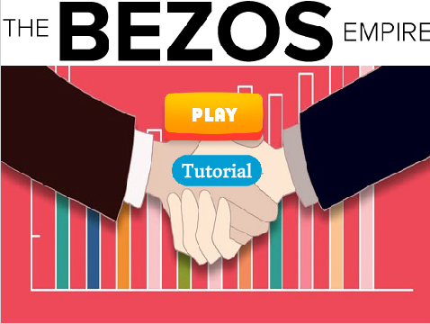
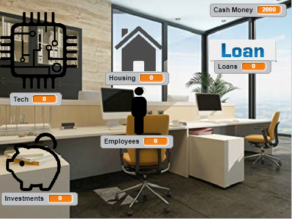

My Portfolio
Choose Your Own Adventure: Happy in the WoodsScratch Game: Jeff Bezos Empire
Choose Your Own Adventure: Happy in the Woods
There is a dog named Happy that is looking for his friend, but
must go through the woods in order to find that person. Inside the
woods, he gets lost and needs guidance. He eventually gets lost and
finds himself scared of what lurks inside the woods.
The incremental and iterative process consisted of us trying to
develop a story that could fully utilize this format. We started
with the idea of some kind of medieval time period with magic, but
it was too complicated so we made the program into a children's story
Afterwards, we had to flesh out the endings that we wanted to have.
At first, we were going to have two completely separate ending, but
to simplify the story and process we linked the two paths together to
result in simply two endings. We encountered the problem of making a
story that was too complex so we simplified it down completely. The
problems we faced is that the problem lies in how many routes we wanted.
so we made it only two endings as stated before.
Organizing our story into functions is a form of abstraction because
we made the process easier to understand by simplifying it into one function.
The function has the result of typing and continuing the story in the way
that suited our wants without the complication that is included with machinery.
The advantages is that we are able to understand our code and write it
in a more efficient manner.
One story I read that I particularly liked is one that included a sort
of dating simulator for a woman where she could choose to study or date a rich man.
I found the story and the endings quite entertaining.
Scratch Game: Jeff Bezos Empire
  https://scratch.mit.edu/projects/258988991/GAME DESCRIPTION
The context of the game is that the player is making a new
startup company. The scoring system consists of how much money
the company has in terms of cash money.The randomness occurs when
the game chooses a random number that decides how much money the
player loses or gains. The game gets more difficult because the more
employees that the player has,then the more money they lose when the
number chosen results in cash money lost. The game ends or the player
loses when they go bankrupt by having -5000 cash money.
REFLECTION
I created this game because I'm interested in the aspect of creating
a business and being an entrepreneur. My inspiration is Victoria 2
because, even though the economic aspect is not the main point of the
game, the mechanic of trying to support an economy was quite interesting.
The two succeessful points were that I created a random number generator
that was useful for the game and the game did not have any game breaking
features. The two obstacles were that I was balancing the difficulty
of the game which was either too hard or too easy and simply not
being knowledgeable enough for certain mechanics that would be too
complex. I would improve the random number generator as it feels
a little off and the feel of it.
ALGORITHM
It is an algorithm because it follows a step by step procedure by
first brodcasting a number from 1 to 10 and then performing a result
on the cash money. This is the main mechanic of my game as the whole
game consists of the flucuation of money based on this algorithm.